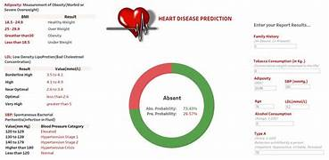

heart disease prediction img - Yahoo India Image Search results
Yahoo Image Search Results Page
Header
Home
News
Mail
Finance
Weather
Sports
Sign In
Yahoo
Search Box
Search query
Search
All
Images
Videos
News
Filter
Size
All
Small
Medium
Large
Extra-large
Colour
All
Colour only
Black & White
Type
All
Photo
Clipart
Line drawing
Animated GIF
Transparent
Layout
All
Square
Wide
Tall
People
All
Faces only
Head and shoulders
No people
Time
All
Past 24 hours
Past week
Past month
Past year
Usage Rights
All
All Creative Commons
Public domain
Free to share and use
Free to share and use commercially
Free to modify, share and use
Free to modify, share and use commercially
Search Results

Heart Disease Prediction Using Machine Learning
mungfali.com
1000x500
View image
View page
Show More Images


![](https://in.images.search.yahoo.com/images/view;_ylt=Awrx.wirUt1m9n40Nhu9HAx.;_ylu=c2VjA3NyBHNsawNpbWcEb2lkAzRiNTNmNDdkNDYyMmE4Y2EwMzY0MmE5ZjkzMzgwNWJhBGdwb3MDNwRpdANiaW5n?back=https%3A%2F%2Fin.images.search.yahoo.com%2Fsearch%2Fimages%3Fp%3Dheart%2Bdisease%2Bprediction%2Bimg%26ei%3DUTF-8%26type%3DE210IN885G0%26fr%3Dmcafee%26fr2%3Dp%253As%252Cv%253Ai%252Cm%253Asb-top%26tab%3Dorganic%26ri%3D7&w=1000&h=500&imgurl=res.cloudinary.com%2Fpracticaldev%2Fimage%2Ffetch%2Fs--kYxDRYqt--%2Fc_imagga_scale%2Cf_auto%2Cfl_progressive%2Ch_500%2Cq_auto%2Cw_1000%2Fhttps%3A%2F%2Fdev-to-uploads.s3.amazonaws.com%2Fuploads%2Farticles%2Futpnmhmyp3eob9qwaojw.png&rurl=https%3A%2F%2Fmungfali.com%2Fexplore%2FHeart-Disease-Prediction-Using-Machine-Learning&size=124.1KB&p=heart+disease+prediction+img&oid=4b53f47d4622a8ca03642a9f933805ba&fr2=p%3As%2Cv%3Ai%2Cm%3Asb-top&fr=mcafee&tt=Heart+Disease+Prediction+Using+Machine+Learning&b=0&ni=80&no=7&ts=&tab=organic&sigr=xBE0eaQLAVA5&sigb=KLYQ5iX7zZ9q&sigi=0ilJzRjDesAP&sigt=RhMzqLkAI6Jc&.crumb=sjeoJ7soJAK&fr=mcafee&fr2=p%3As%2Cv%3Ai%2Cm%3Asb-top&type=E210IN885G0)
![](https://in.images.search.yahoo.com/images/view;_ylt=Awrx.wirUt1m9n40Nxu9HAx.;_ylu=c2VjA3NyBHNsawNpbWcEb2lkAzliY2YyYTZiOWYzZDU2MmRmNzFhMDQ3NGYyMDkxMzllBGdwb3MDOARpdANiaW5n?back=https%3A%2F%2Fin.images.search.yahoo.com%2Fsearch%2Fimages%3Fp%3Dheart%2Bdisease%2Bprediction%2Bimg%26ei%3DUTF-8%26type%3DE210IN885G0%26fr%3Dmcafee%26fr2%3Dp%253As%252Cv%253Ai%252Cm%253Asb-top%26tab%3Dorganic%26ri%3D8&w=474&h=231&imgurl=1.bp.blogspot.com%2F-Xbe9FSiawn4%2FX91MrgajmCI%2FAAAAAAAAAVs%2F0UpdTh00ZuEATv9Ly4YaZ_BhNtK7GOQhACLcBGAsYHQ%2Fs1524%2FHearDisease_PredictionTableau.jpg&rurl=https%3A%2F%2Furmishaeduworld.blogspot.com%2F2020%2F12%2Finteractive-tableau-viz-heart-disease.html&size=196.9KB&p=heart+disease+prediction+img&oid=9bcf2a6b9f3d562df71a0474f209139e&fr2=p%3As%2Cv%3Ai%2Cm%3Asb-top&fr=mcafee&tt=DATAmAInd%3A+Interactive+Tableau+Viz%3A+Heart+Disease+Prediction+based+on+...&b=0&ni=80&no=8&ts=&tab=organic&sigr=1QuM42DgsqA4&sigb=R3wYUA0NfQu9&sigi=bfMAh0x0me1r&sigt=.Cj.fqsUSsXp&.crumb=sjeoJ7soJAK&fr=mcafee&fr2=p%3As%2Cv%3Ai%2Cm%3Asb-top&type=E210IN885G0)


![](https://in.images.search.yahoo.com/images/view;_ylt=Awrx.wirUt1m9n40Qhu9HAx.;_ylu=c2VjA3NyBHNsawNpbWcEb2lkAzk4NmUxZDlmMWU3ZmQyMjA3YTU4NTk1NWQwYWNmM2FhBGdwb3MDMTkEaXQDYmluZw--?back=https%3A%2F%2Fin.images.search.yahoo.com%2Fsearch%2Fimages%3Fp%3Dheart%2Bdisease%2Bprediction%2Bimg%26ei%3DUTF-8%26type%3DE210IN885G0%26fr%3Dmcafee%26fr2%3Dp%253As%252Cv%253Ai%252Cm%253Asb-top%26tab%3Dorganic%26ri%3D19&w=1268&h=833&imgurl=jpinfotech.org%2Fwp-content%2Fuploads%2F2023%2F01%2FJPPY2229-Heart-Disease-Prediction-using-Machine-Learning.jpg&rurl=https%3A%2F%2Fjpinfotech.org%2Fproject%2Fjppy2229-heart-disease-prediction-using-machine-learning-and-data-analytics-approach%2F&size=53.1KB&p=heart+disease+prediction+img&oid=986e1d9f1e7fd2207a585955d0acf3aa&fr2=p%3As%2Cv%3Ai%2Cm%3Asb-top&fr=mcafee&tt=JPPY2229+-+Heart+Disease+Prediction+using+Machine+Learning+and+Data+...&b=0&ni=80&no=19&ts=&tab=organic&sigr=FlvttHcwQk3e&sigb=a6xOIkj6Q5bz&sigi=KliJW01woDJm&sigt=Cv4uPSRdfR0O&.crumb=sjeoJ7soJAK&fr=mcafee&fr2=p%3As%2Cv%3Ai%2Cm%3Asb-top&type=E210IN885G0)


![](https://in.images.search.yahoo.com/images/view;_ylt=Awrx.wirUt1m9n40SBu9HAx.;_ylu=c2VjA3NyBHNsawNpbWcEb2lkA2FlN2NiN2U3ZDgzYWRiNTRlM2NkNzZiNGJhMmZlN2RhBGdwb3MDMjUEaXQDYmluZw--?back=https%3A%2F%2Fin.images.search.yahoo.com%2Fsearch%2Fimages%3Fp%3Dheart%2Bdisease%2Bprediction%2Bimg%26ei%3DUTF-8%26type%3DE210IN885G0%26fr%3Dmcafee%26fr2%3Dp%253As%252Cv%253Ai%252Cm%253Asb-top%26tab%3Dorganic%26ri%3D25&w=768&h=512&imgurl=hitconsultant.net%2Fwp-content%2Fuploads%2F2022%2F08%2FAI-More-Accurate-for-Cardiac-Diagnosis-than-Echocardiogram-Assessments-768x512.jpg&rurl=https%3A%2F%2Fhitconsultant.net%2F2022%2F08%2F31%2Fai-more-accurate-for-cardiac-diagnosis%2F&size=46.2KB&p=heart+disease+prediction+img&oid=ae7cb7e7d83adb54e3cd76b4ba2fe7da&fr2=p%3As%2Cv%3Ai%2Cm%3Asb-top&fr=mcafee&tt=AI+More+Accurate+for+Cardiac+Diagnosis+than+Echocardiogram+Assessments&b=0&ni=80&no=25&ts=&tab=organic&sigr=ciUazCaseKG_&sigb=EqzldLpCmkHv&sigi=hWU2GKmWOvAu&sigt=Ei9ULGFONH92&.crumb=sjeoJ7soJAK&fr=mcafee&fr2=p%3As%2Cv%3Ai%2Cm%3Asb-top&type=E210IN885G0)


![](https://in.images.search.yahoo.com/images/view;_ylt=Awrx.wirUt1m9n40Txu9HAx.;_ylu=c2VjA3NyBHNsawNpbWcEb2lkA2M2M2E3Njk3YmRlODVjMTRkYTRhNDcwODMwZWZhNmZhBGdwb3MDMzIEaXQDYmluZw--?back=https%3A%2F%2Fin.images.search.yahoo.com%2Fsearch%2Fimages%3Fp%3Dheart%2Bdisease%2Bprediction%2Bimg%26ei%3DUTF-8%26type%3DE210IN885G0%26fr%3Dmcafee%26fr2%3Dp%253As%252Cv%253Ai%252Cm%253Asb-top%26tab%3Dorganic%26ri%3D32&w=850&h=1107&imgurl=www.researchgate.net%2Fprofile%2FNada-Sid-Ahmed%2Fpublication%2F348753541%2Ffigure%2Ffig1%2FAS%3A984109006471178%401611641279395%2FProposed-hybrid-heart-disease-prediction-system.png&rurl=https%3A%2F%2Fwww.researchgate.net%2Ffigure%2FProposed-hybrid-heart-disease-prediction-system_fig1_348753541&size=107.6KB&p=heart+disease+prediction+img&oid=c63a7697bde85c14da4a470830efa6fa&fr2=p%3As%2Cv%3Ai%2Cm%3Asb-top&fr=mcafee&tt=Proposed+hybrid+heart+disease+prediction+system+%7C+Download+Scientific+...&b=0&ni=80&no=32&ts=&tab=organic&sigr=yONQt1df_g8M&sigb=a58txZdWR.yF&sigi=pUEhQQpTcMYu&sigt=bO48sp5nlrNA&.crumb=sjeoJ7soJAK&fr=mcafee&fr2=p%3As%2Cv%3Ai%2Cm%3Asb-top&type=E210IN885G0)


![](https://in.images.search.yahoo.com/images/view;_ylt=Awrx.wirUt1m9n40Vhu9HAx.;_ylu=c2VjA3NyBHNsawNpbWcEb2lkAzgyZjQyNjYwNjZmZTY5ODc0OThjYjhlMWNmN2IzYzY5BGdwb3MDMzkEaXQDYmluZw--?back=https%3A%2F%2Fin.images.search.yahoo.com%2Fsearch%2Fimages%3Fp%3Dheart%2Bdisease%2Bprediction%2Bimg%26ei%3DUTF-8%26type%3DE210IN885G0%26fr%3Dmcafee%26fr2%3Dp%253As%252Cv%253Ai%252Cm%253Asb-top%26tab%3Dorganic%26ri%3D39&w=1200&h=1697&imgurl=d20ohkaloyme4g.cloudfront.net%2Fimg%2Fdocument_thumbnails%2Fa5d9b20634e3557519e0c7596c41f577%2Fthumb_1200_1697.png&rurl=https%3A%2F%2Fwww.studocu.com%2Fin%2Fdocument%2Fvisvesvaraya-technological-university%2Fcomputer-networks-and-security%2Fheart-disease-prediction-using-machine-learning-ijertv-9is040614%2F22456444&size=696.8KB&p=heart+disease+prediction+img&oid=82f4266066fe6987498cb8e1cf7b3c69&fr2=p%3As%2Cv%3Ai%2Cm%3Asb-top&fr=mcafee&tt=Heart+disease+prediction+using+machine+learning+Ijertv+9IS040614+...&b=0&ni=80&no=39&ts=&tab=organic&sigr=VMSNAWm9UVIe&sigb=EKHTlt8J_bC4&sigi=S9rksfblGQ9x&sigt=EU1FLRpLkGqu&.crumb=sjeoJ7soJAK&fr=mcafee&fr2=p%3As%2Cv%3Ai%2Cm%3Asb-top&type=E210IN885G0)
![](https://in.images.search.yahoo.com/images/view;_ylt=Awrx.wirUt1m9n40Vxu9HAx.;_ylu=c2VjA3NyBHNsawNpbWcEb2lkA2YxZTRmZDMwYmQyM2U0MzhkOGJlYzhkOGEwMWU0OTk1BGdwb3MDNDAEaXQDYmluZw--?back=https%3A%2F%2Fin.images.search.yahoo.com%2Fsearch%2Fimages%3Fp%3Dheart%2Bdisease%2Bprediction%2Bimg%26ei%3DUTF-8%26type%3DE210IN885G0%26fr%3Dmcafee%26fr2%3Dp%253As%252Cv%253Ai%252Cm%253Asb-top%26tab%3Dorganic%26ri%3D40&w=850&h=553&imgurl=www.researchgate.net%2Fpublication%2F362199058%2Ffigure%2Ffig1%2FAS%3A1180799386816512%401658535920490%2FHeart-disease-risk-prediction-system-block-diagram.png&rurl=https%3A%2F%2Fwww.researchgate.net%2Ffigure%2FHeart-disease-risk-prediction-system-block-diagram_fig1_362199058&size=126.5KB&p=heart+disease+prediction+img&oid=f1e4fd30bd23e438d8bec8d8a01e4995&fr2=p%3As%2Cv%3Ai%2Cm%3Asb-top&fr=mcafee&tt=Heart+disease+risk+prediction+system-block+diagram.+%7C+Download+...&b=0&ni=80&no=40&ts=&tab=organic&sigr=O.nLGQhWJDB8&sigb=DsxIN_l3BuUY&sigi=xWkLYMBKLTDe&sigt=3RdQhZC0.3bY&.crumb=sjeoJ7soJAK&fr=mcafee&fr2=p%3As%2Cv%3Ai%2Cm%3Asb-top&type=E210IN885G0)


![](https://in.images.search.yahoo.com/images/view;_ylt=Awrx.wirUt1m9n40Whu9HAx.;_ylu=c2VjA3NyBHNsawNpbWcEb2lkA2ZiN2M1YzRhODJiNzE2YzEwZGM4ZTJhNmE3MmM3NjA2BGdwb3MDNDMEaXQDYmluZw--?back=https%3A%2F%2Fin.images.search.yahoo.com%2Fsearch%2Fimages%3Fp%3Dheart%2Bdisease%2Bprediction%2Bimg%26ei%3DUTF-8%26type%3DE210IN885G0%26fr%3Dmcafee%26fr2%3Dp%253As%252Cv%253Ai%252Cm%253Asb-top%26tab%3Dorganic%26ri%3D43&w=1067&h=1622&imgurl=1.bp.blogspot.com%2F-V9fkRRCsziA%2FX4aX4DM3fUI%2FAAAAAAAAE70%2FH1mueacyZlsgLrEffVh4mpEpo2oKFBSCACNcBGAsYHQ%2Fs1622%2F2020-10-14%252B11_44_51-Heart%252BDisease%252BPrediction.png&rurl=https%3A%2F%2Fwww.vrogue.co%2Fpost%2Fproject-predicting-heart-disease-with-classification-machine-learning&size=579.8KB&p=heart+disease+prediction+img&oid=fb7c5c4a82b716c10dc8e2a6a72c7606&fr2=p%3As%2Cv%3Ai%2Cm%3Asb-top&fr=mcafee&tt=Project+Predicting+Heart+Disease+With+Classification+Machine+Learning+...&b=0&ni=80&no=43&ts=&tab=organic&sigr=m.2YI27HXDRN&sigb=XU.v.5f7K7og&sigi=ijReb4OrI4su&sigt=o8_i8HNQcmvd&.crumb=sjeoJ7soJAK&fr=mcafee&fr2=p%3As%2Cv%3Ai%2Cm%3Asb-top&type=E210IN885G0)


![](https://in.images.search.yahoo.com/images/view;_ylt=Awrx.wirUt1m9n40Yhu9HAx.;_ylu=c2VjA3NyBHNsawNpbWcEb2lkAzVkZTM2YzNhNmM5ZWFlN2ZiMDk3MTZlYTAwMWNlNjVmBGdwb3MDNTEEaXQDYmluZw--?back=https%3A%2F%2Fin.images.search.yahoo.com%2Fsearch%2Fimages%3Fp%3Dheart%2Bdisease%2Bprediction%2Bimg%26ei%3DUTF-8%26type%3DE210IN885G0%26fr%3Dmcafee%26fr2%3Dp%253As%252Cv%253Ai%252Cm%253Asb-top%26tab%3Dorganic%26ri%3D51&w=600&h=275&imgurl=www.c-sharpcorner.com%2Farticle%2Fheart-disease-prediction-in-asp-net-core-using-ml-net%2FImages%2FHeart%2520Disease%2520Prediction%2520Demo.gif&rurl=https%3A%2F%2Fwww.c-sharpcorner.com%2Farticle%2Fheart-disease-prediction-in-asp-net-core-using-ml-net%2F&size=180.8KB&p=heart+disease+prediction+img&oid=5de36c3a6c9eae7fb09716ea001ce65f&fr2=p%3As%2Cv%3Ai%2Cm%3Asb-top&fr=mcafee&tt=Heart+Disease+Prediction+In+ASP.NET+Core+Using+ML.NET&b=0&ni=80&no=51&ts=&tab=organic&sigr=yv9J5zF5BQ4z&sigb=kNrmZZoOBLaU&sigi=bkPuEq0yvw6i&sigt=X1YPYEea0GLd&.crumb=sjeoJ7soJAK&fr=mcafee&fr2=p%3As%2Cv%3Ai%2Cm%3Asb-top&type=E210IN885G0)

![](https://in.images.search.yahoo.com/images/view;_ylt=Awrx.wirUt1m9n40ZBu9HAx.;_ylu=c2VjA3NyBHNsawNpbWcEb2lkAzU0OGUxYTBiZjE3OWE2MjA5NWY3NWY4YWJkMDFlMTcwBGdwb3MDNTMEaXQDYmluZw--?back=https%3A%2F%2Fin.images.search.yahoo.com%2Fsearch%2Fimages%3Fp%3Dheart%2Bdisease%2Bprediction%2Bimg%26ei%3DUTF-8%26type%3DE210IN885G0%26fr%3Dmcafee%26fr2%3Dp%253As%252Cv%253Ai%252Cm%253Asb-top%26tab%3Dorganic%26ri%3D53&w=850&h=1202&imgurl=i1.rgstatic.net%2Fpublication%2F363535636_ML_DL_Methodologies_in_Heart_Disease_Prediction_Brief_Analysis%2Flinks%2F6321774e071ea12e3630c82b%2Flargepreview.png&rurl=https%3A%2F%2Fwww.researchgate.net%2Fpublication%2F363535636_ML_DL_Methodologies_in_Heart_Disease_Prediction_Brief_Analysis&size=169.4KB&p=heart+disease+prediction+img&oid=548e1a0bf179a62095f75f8abd01e170&fr2=p%3As%2Cv%3Ai%2Cm%3Asb-top&fr=mcafee&tt=%28PDF%29+ML+%26+DL+Methodologies+in+Heart+Disease+Prediction%3A+Brief+Analysis&b=0&ni=80&no=53&ts=&tab=organic&sigr=7gygnbyo37Q4&sigb=t5yHIbLnTVV1&sigi=c4GvI2lSIAMU&sigt=t29PjrA1jSH1&.crumb=sjeoJ7soJAK&fr=mcafee&fr2=p%3As%2Cv%3Ai%2Cm%3Asb-top&type=E210IN885G0)


![](https://in.images.search.yahoo.com/images/view;_ylt=Awrx.wirUt1m9n40Zxu9HAx.;_ylu=c2VjA3NyBHNsawNpbWcEb2lkA2U3ZThlYmVmZGIxNTZiNjA5MTMyYjI5Mjg3ZDA5OTY0BGdwb3MDNTYEaXQDYmluZw--?back=https%3A%2F%2Fin.images.search.yahoo.com%2Fsearch%2Fimages%3Fp%3Dheart%2Bdisease%2Bprediction%2Bimg%26ei%3DUTF-8%26type%3DE210IN885G0%26fr%3Dmcafee%26fr2%3Dp%253As%252Cv%253Ai%252Cm%253Asb-top%26tab%3Dorganic%26ri%3D56&w=495&h=640&imgurl=img.yumpu.com%2F34267469%2F1%2F500x640%2Fheart-disease-prediction-system-using-weight-optimized-ijcsmr.jpg&rurl=https%3A%2F%2Fwww.yumpu.com%2Fen%2Fdocument%2Fview%2F34267469%2Fheart-disease-prediction-system-using-weight-optimized-ijcsmr&size=85.6KB&p=heart+disease+prediction+img&oid=e7e8ebefdb156b609132b29287d09964&fr2=p%3As%2Cv%3Ai%2Cm%3Asb-top&fr=mcafee&tt=heart+disease+prediction+system+using+weight+optimized+...+-+ijcsmr&b=0&ni=80&no=56&ts=&tab=organic&sigr=gZ.XTFj4HQZv&sigb=phZU.S.ffw7u&sigi=vtXxASYGljp.&sigt=nP7K0EA394Om&.crumb=sjeoJ7soJAK&fr=mcafee&fr2=p%3As%2Cv%3Ai%2Cm%3Asb-top&type=E210IN885G0)
![](https://in.images.search.yahoo.com/images/view;_ylt=Awrx.wirUt1m9n40aBu9HAx.;_ylu=c2VjA3NyBHNsawNpbWcEb2lkAzUyOWM4M2RjNGRlNzBmZjk3Zjk1NWJkMTdlZTIwM2ZjBGdwb3MDNTcEaXQDYmluZw--?back=https%3A%2F%2Fin.images.search.yahoo.com%2Fsearch%2Fimages%3Fp%3Dheart%2Bdisease%2Bprediction%2Bimg%26ei%3DUTF-8%26type%3DE210IN885G0%26fr%3Dmcafee%26fr2%3Dp%253As%252Cv%253Ai%252Cm%253Asb-top%26tab%3Dorganic%26ri%3D57&w=600&h=600&imgurl=www.researchgate.net%2Fpublication%2F357462526%2Ffigure%2Ffig1%2FAS%3A1111062460018697%401641909341264%2FProposed-smart-heart-disease-prediction-system-with-IoT-fog-computing_Q640.jpg&rurl=https%3A%2F%2Fwww.researchgate.net%2Ffigure%2FAnalysis-on-designed-smart-heart-disease-prediction-model-with-different_fig11_357462526&size=87.8KB&p=heart+disease+prediction+img&oid=529c83dc4de70ff97f955bd17ee203fc&fr2=p%3As%2Cv%3Ai%2Cm%3Asb-top&fr=mcafee&tt=Analysis+on+designed+smart+%E2%80%9Cheart+disease+prediction%E2%80%9D+model+with+...&b=0&ni=80&no=57&ts=&tab=organic&sigr=dTUV_O9k9IXR&sigb=Q6Dtkzx0X7.x&sigi=EQ8ums7B6jKl&sigt=8ch3dAoTz8ja&.crumb=sjeoJ7soJAK&fr=mcafee&fr2=p%3As%2Cv%3Ai%2Cm%3Asb-top&type=E210IN885G0)
![](https://in.images.search.yahoo.com/images/view;_ylt=Awrx.wirUt1m9n40aRu9HAx.;_ylu=c2VjA3NyBHNsawNpbWcEb2lkA2IyOGVlNGNlMTc4ZmE3YWVmOTQzMWExMDc1MjI3NWI0BGdwb3MDNTgEaXQDYmluZw--?back=https%3A%2F%2Fin.images.search.yahoo.com%2Fsearch%2Fimages%3Fp%3Dheart%2Bdisease%2Bprediction%2Bimg%26ei%3DUTF-8%26type%3DE210IN885G0%26fr%3Dmcafee%26fr2%3Dp%253As%252Cv%253Ai%252Cm%253Asb-top%26tab%3Dorganic%26ri%3D58&w=770&h=510&imgurl=www.bhf.org.uk%2F-%2Fmedia%2Fimages%2Fwhat-we-do%2Fresearch%2Fresearch-successes%2Fartificial_heart_770x510-ss-no-exp.jpg%3Frev%3Dabcddc5809d64a079d4b5cd83764052c&rurl=https%3A%2F%2Fwww.bhf.org.uk%2Fwhat-we-do%2Four-research%2Fresearch-successes%2Fartificial-intelligence-and-heart-attack&size=63.6KB&p=heart+disease+prediction+img&oid=b28ee4ce178fa7aef9431a10752275b4&fr2=p%3As%2Cv%3Ai%2Cm%3Asb-top&fr=mcafee&tt=Artificial+intelligence+for+heart+attack+prediction+%7C+BHF+-+BHF&b=0&ni=80&no=58&ts=&tab=organic&sigr=odjO3BC5XZSs&sigb=eg1.kWB1Dk07&sigi=B_o4GIxhJvbl&sigt=HPunBXbAg4oR&.crumb=sjeoJ7soJAK&fr=mcafee&fr2=p%3As%2Cv%3Ai%2Cm%3Asb-top&type=E210IN885G0)


{kind=link}